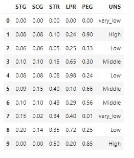

Decision Tree (Pohon Keputusan)¶
Konsep¶
Salah satu metode data mining yang umum digunakan adalah pohon keputusan. Metode pohon keputusan mengubah fakta yang sangat besar menjadi pohon keputusan yang merepresentasikan rule. Pohon keputusan adalah salah satu metode klasifikasi yang paling popular karena mudah untuk diinterpretasi oleh manusia. Konsep dari pohon keputusan adalah mengubah data menjadi pohon keputusan dan aturan-aturan keputusan.
Data dalam pohon keputusan biasanya dinyatakan dalam bentuk tabel dengan atribut dan record. Atribut menyatakan suatu parameter yang dibuat sebagai kriteria dalam pembentukan tree
Proses pada pohon keputusan adalah mengubah bentuk data (tabel) menjadi model pohon, mengubah model pohon menjadi rule, dan menyederhanakan rule. Manfaat utama dari penggunaan pohon keputusan adalah kemampuannya untuk membreak down proses pengambilan keputusan yang kompleks menjadi lebih simpel sehingga pengambil keputusan akan lebih menginterpretasikan solusi dari permasalahan. Pohon Keputusan juga berguna untuk mengeksplorasi data, menemukan hubungan tersembunyi antara sejumlah calon variabel input dengan sebuah variabel target.
Pohon keputusan merupakan himpunan aturan IF…THEN. Setiap path dalam tree dihubungkan dengan sebuah aturan, di mana premis terdiri atas sekumpulan node-node yang ditemui, dan kesimpulan dari aturam terdiri atas kelas yang terhubung dengan leaf dari path.

Bagian awal dari pohon keputusan ini adalah titik akar (root), sedangkan setiap cabang dari pohon keputusan merupakan pembagian berdasarkan hasil uji, dan titik akhir (leaf) merupakan pembagian kelas yang dihasilkan.
Pohon keputusan mempunyai 3 tipe simpul yaitu: 1. Simpul akar, dimana tidak memiliki cabang yang masuk dan memiliki cabang lebih dari satu, terkadang tidak memiliki cabang sama sekali. Simpul ini biasanya berupa atribut yang paling memiliki pengaruh terbesar pada suatu kelas tertentu. 2. Simpul internal, dimana hanya memiliki 1 cabang yang masuk, dan memiliki lebih dari 1 cabang yang keluar. 3. Simpul daun, atau simpul akhir dimana hanya memiliki 1 cabang yang masuk, dan tidak memiliki cabang sama sekali dan menandai bahwa simpul tersebut merupakan label kelas.
Tahap awal dilakukan pengujian simpul akar, jika pada pengujian simpul akar menghasilkan sesuatu maka proses pengujian juga dilakukan pada setiap cabang berdasarkan hasil dari pengujian. Hal ini berlaku juga untuk simpul internal dimana suatu kondisi pengujian baru akan diterapkan pada simpul daun. Pada umumnya proses dari sistem pohon keputusan adalah mengadopsi strategi pencarian top-down untuk solusi ruang pencariannya. Pada proses mengklasifikasikan sampel yang tidak diketahui, nilai atribut akan diuji pada pohon keputusan dengan cara melacak jalur dari titik akar sampai titik akhir, kemudian akan diprediksikan kelas yang ditempati sampel baru tersebut. Pohon keputusan banyak digunakan dalam proses data mining karena memiliki beberapa kelebihan, yaitu: 1. Tidak memerlukan biaya yang mahal saat membangun algoritma. 2. Mudah untuk diinterpetasikan. 3. Mudah mengintegrasikan dengan sistem basis data. 4. Memiliki nilai ketelitian yang lebih baik. 5. Dapat menemukan hubungan tak terduga dan suatu data. 6. Dapat menggunakan data pasti/mutlak atau data kontinu. 7. Mengakomodasi data yang hilang.
Algoritma Pohon Keputusan¶
Salah satu algoritma induksi pohon keputusan yaitu ID3 (Iterative Dichotomiser 3). ID3 dikembangkan oleh J. Ross Quinlan. Dalam prosedur algoritma ID3, input berupa sampel training, label training dan atribut. Algoritma C4.5 merupakan pengembangan dari ID3. Sedangkan pada perangkat lunak open source WEKA mempunyai versi sendiri C4.5 yang dikenal sebagai J48.
Pohon dibangun dengan cara membagi data secara rekursif hingga tiap bagian terdiri dari data yang berasal dari kelas yang sama. Bentuk pemecahan (split) yang digunakan untuk membagi data tergantung dari jenis atribut yang digunakan dalam split. Algoritma C4.5 dapat menangani data numerik (kontinyu) dan diskret. Split untuk atribut numerik yaitu mengurutkan contoh berdasarkan atribut kontiyu A, kemudian membentuk minimum permulaan (threshold) M dari contoh-contoh yang ada dari kelas mayoritas pada setiap partisi yang bersebelahan, lalu menggabungkan partisi-partisi yang bersebelahan tersebut dengan kelas mayoritas yang sama. Split untuk atribut diskret A mempunyai bentuk value (A) ε X dimana X ⊂ domain(A).
Jika suatu set data mempunyai beberapa pengamatan dengan missing value yaitu record dengan beberapa nilai variabel tidak ada, Jika jumlah pengamatan terbatas maka atribut dengan missing value dapat diganti dengan nilai rata-rata dari variabel yang bersangkutan.[Santosa,2007]
Untuk melakukan pemisahan obyek (split) dilakukan tes terhadap atribut dengan mengukur tingkat ketidakmurnian pada sebuah simpul (node). Pada algoritma C.45 menggunakan rasio perolehan (gain ratio). Sebelum menghitung rasio perolehan, perlu menghitung dulu nilai informasi dalam satuan bits dari suatu kumpulan objek. Cara menghitungnya dilakukan dengan menggunakan konsep entropi.

S adalah ruang (data) sampel yang digunakan untuk pelatihan, p+ adalah jumlah yang bersolusi positif atau mendukung pada data sampel untuk kriteria tertentu dan p- adalah jumlah yang bersolusi negatif atau tidak mendukung pada data sampel untuk kriteria tertentu. ntropi(S) sama dengan 0, jika semua contoh pada S berada dalam kelas yang sama. Entropi(S) sama dengan 1, jika jumlah contoh positif dan negative dalam S adalah sama. Entropi(S) lebih dari 0 tetapi kurang dari 1, jika jumlah contoh positif dan negative dalam S tidak sama [Mitchell,1997].Entropi split yang membagi S dengan n record menjadi himpunan-himpunan S1 dengan n1 baris dan S2 dengan n2 baris adalah :

Kemudian menghitung perolehan informasi dari output data atau variabel dependent y yang dikelompokkan berdasarkan atribut A, dinotasikan dengan gain (y,A). Perolehan informasi, gain (y,A), dari atribut A relative terhadap output data y adalah:

nilai (A) adalah semua nilai yang mungkin dari atribut A, dan yc adalah subset dari y dimana A mempunyai nilai c. Term pertama dalam persamaan diatas adalah entropy total y dan term kedua adalah entropy sesudah dilakukan pemisahan data berdasarkan atribut A.
Untuk menghitung rasio perolehan perlu diketahui suatu term baru yang disebut pemisahan informasi (SplitInfo). Pemisahan informasi dihitung dengan cara :
bahwa S1 sampai Sc adalah c subset yang dihasilkan dari pemecahan S dengan menggunakan atribut A yang mempunyai sebanyak c nilai. Selanjutnya rasio perolehan (gain ratio) dihitung dengan cara :

Implementasi¶
studi kasus kali ini, saya akan menggunakan dataset user modeling. dataset ini memiliki 6 kolom dan memiliki 3 klasifikasi kelas. berikut merupakan data yang saya gunakan disini
langsung ke programnya :
import pandas as pd from sklearn.tree import DecisionTreeClassifier from sklearn import model_selection from sklearn import metrics from sklearn.model_selection import train_test_split from sklearn.tree import export_graphviz from sklearn.externals.six import StringIO import pydotplus from IPython.display import Image
kemudian membaca file csv nya
df=pd.read_csv('data.csv')
menampilkan datanya :
print("Informasi Data\n")
print("Jumlah Data : ", len(df))
print ("Dimensi Data : ",df.shape)
print ("Dataset :")
print(df.head())
print('\n')
10 baris pertama :
df.head(10)

splitting dataset ke training dan testing
train, test = train_test_split(df, test_size = 0.1,random_state=1234) #mencari hasil print(train.shape) print(test.shape)
# Dataset validasi dataset array = df.values X = array[:,1:5] Y = array[:,5] # Sepertiga data sebagai bagian dari set tes validation_size = 15 seed = 7 X_train, X_validation, Y_train, Y_validation = model_selection.train_test_split(X, Y, test_size=validation_size, random_state=seed)
mencari Hasil :
print(X_train.shape) print(Y_train.shape) print(X_validation.shape) print(Y_validation.shape)
entropy= DecisionTreeClassifier(criterion="entropy",random_state=1234)
#learning
entropy.fit(X_train,Y_train)
#Prediksi
prediction=entropy.predict(X_validation)
#mengevaluasi(Accuracy)
print("Accuracy:",metrics.accuracy_score(prediction,Y_validation))
#evaluation(Confusion Metrix)
print("Confusion Metrix:\n",metrics.confusion_matrix(prediction,Y_validation))
feature_cols=['SCG','STR' ,'LPR' , 'PEG']
dot_data = StringIO()
export_graphviz(entropy, out_file=dot_data,
filled=True, rounded=True,
special_characters=True,feature_names = feature_cols,class_names=['very_low','high','low','middle'])
graph = pydotplus.graph_from_dot_data(dot_data.getvalue())
graph.write_png('entropy.png')
Image(graph.create_png())
print("Hasil prediksi menngunakan entropy")
#Membentuk kembali diperlukan untuk melakukan penggabungan
pred_clf_df = pd.DataFrame(prediction.reshape(15,1))
#Ganti nama kolom untuk menunjukkan prediksi
pred_clf_df.rename(columns={0:'Prediction'}, inplace=True)
#membentuk kembali dataset uji
X_validation_df = pd.DataFrame(X_validation.reshape(15 ,4))
#menggabungkan dua bingkai data panda di atas kolom untuk membuat dataset prediksi
pred_outcome = pd.concat([X_validation_df, pred_clf_df], axis=1, join_axes=[X_validation_df.index])
pred_outcome.rename(columns = {0:'STG',1:'SCG',2:'STR' ,3:'LPR' ,4: 'PEG'}, inplace=True)
#cetak 10 baris prediksi akhir
print((pred_outcome).head(15))
print ("\n")
#mengevaluasi(Accuracy)
print("Accuracy:",metrics.accuracy_score(prediction,Y_validation))
Referensi :
https://medium.com/@mimubarok.mim/decision-tree-pohon-keputusan-6484ad30c289
https://sharingaddicted.com/pengambilan-keputusan-menggunakan-pohon-keputusan/